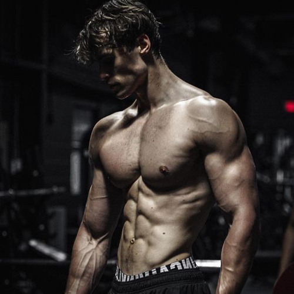
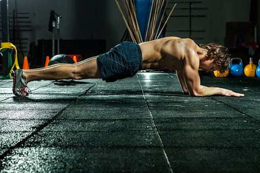

TREN SUPERIORDIA UNO
Bloque 1:
//Press de Banca con barra: 4 series de 6-8 repeticiones.
//Press Militar (de pie): 3 series de 8-10 repeticiones.
//Fondos en paralelas (Dips): 3 series de 8-12 repeticiones.
Bloque 2:
//Tracción (Espalda y Bíceps)
//Dominadas (Pull-ups): 3 series al fallo o 8-10 repeticiones (usa asistencia si es necesario).
//Remo en polea baja: 4 series de 8-12 repeticiones.
//Curl de bíceps con barra: 3 series de 10-12 repeticiones.

COREDIA DOS
Circuito de Core (3 a 4 rondas)
//Dead Bug (Bicho muerto): 10 repeticiones por lado. Acuéstate boca arriba, eleva brazos y piernas a 90°. Extiende el brazo y la pierna contraria simultáneamente hacia el suelo sin tocarlo.
//Plancha isométrica (Plank): 30 a 45 segundos. Apoya antebrazos y puntas de los pies. Mantén la espalda recta y el abdomen contraído.
//Press Pallof en polea: 10 repeticiones por lado. De pie, con la polea a la altura del pecho, extiende los brazos hacia el frente y resiste la tracción de la máquina sin girar el torso.
//Paseo del granjero (Farmer's Walk) unilateral: 15 metros por brazo. Toma una mancuerna pesada en una mano y camina manteniendo el torso erguido y firme, evitando inclinarte hacia el lado del peso.
 TREN INFERIOR
TREN INFERIOR
DIA TRES
//Sentadilla libre o en máquina (Smith/Multipower) 8x4 series: Enfocada en cuádriceps y glúteos.
//Prensa de piernas (Leg Press)6x2 series: Excelente para mover más carga de forma segura y trabajar todo el muslo.
//Peso muerto rumano (con barra o mancuernas)8x3 series: Vital para isquiotibiales y glúteos.
//Sentadillas búlgaras 6x3 series: Trabajo unilateral que corrige desequilibrios y aísla el glúteo.
//Curl de femoral (tumbado o sentado)8x4 series: Aislamiento para la parte posterior de las piernas.
//Extensiones de cuádriceps 10x3 series: Para terminar de congestionar la parte frontal.
//Elevación de talones (máquina de gemelos)15x4 series: Para desarrollar la pantorrilla